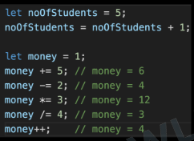
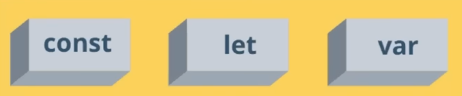

19. What are Variables?
Variables are like containers
used for storing data values.
20. Syntax Rules
1. Can’t use keywords or reserved words
2. Can’t start with a number
3. No special characters other than $ and _
4. = is for assignment
5. ; means end of instruction.
Example :
// Defining a number variable in js :-
let noOfStudents = 5;
// Defining a String variable in js :-
let welcomeMessage = "Welcome to the shit show";
NOTE: let ==> It's a keyword.
// ; means end of instruction :--
let x = 2
let y = 3
console.log(x + y) wil yield 5
let x = 2 let y = 3 console.log(x + y)
Uncaught SynataxError: Unexpected identifier 'let'
Note: If every stmt is in a separate line then it will work but it's not recommended.
let x = 2; let y = 3; console.log(x + y); ==> This works.
21. Updating Values
1. Do not need to use let again.
2. Syntax: variable = variable + 1
3. Assignment Operator is used =
4. Short Hand Assignment Operators: +=, -=, *=, /=, ++

23. Naming Conventions
 camelCase
camelCase
• Start with a lowercase letter. Capitalize the first letter of each subsequent word.
• Example: myVariableName
snake_case
• Start with an lowercase letter. Separate words with underscore
• Example: my_variable_name
Kebab-case
• All lowercase letters. Separate words with hyphens. Used for HTML and CSS.
• Example: my-variable-name
Note: Keep a Good and Short Name
• Choose names that are descriptive but not too long. It should make it easy to understand the variable's purpose.
• Example: age, firstName, isMarried
24. Ways to Create Variables

 Note:
const
We use "const" to declare variables, which are constant.
constant values, so we can't modify
It is recommended to declare variable as const till we don't know it has to be changed.
"const " can be accessed from within the delared block only. (like local variable)
var
"var is not used much, it's outdated."
var can be accessed from anywhere. (kinda global)
Note:
const
We use "const" to declare variables, which are constant.
constant values, so we can't modify
It is recommended to declare variable as const till we don't know it has to be changed.
"const " can be accessed from within the delared block only. (like local variable)
var
"var is not used much, it's outdated."
var can be accessed from anywhere. (kinda global)
LEARN eval Method